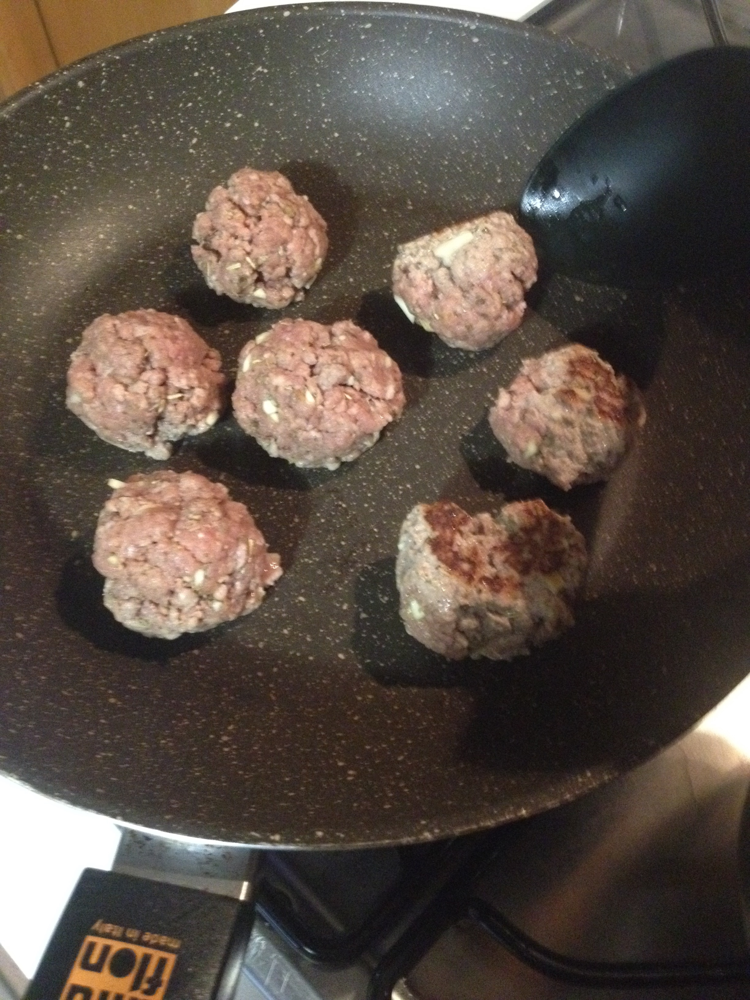
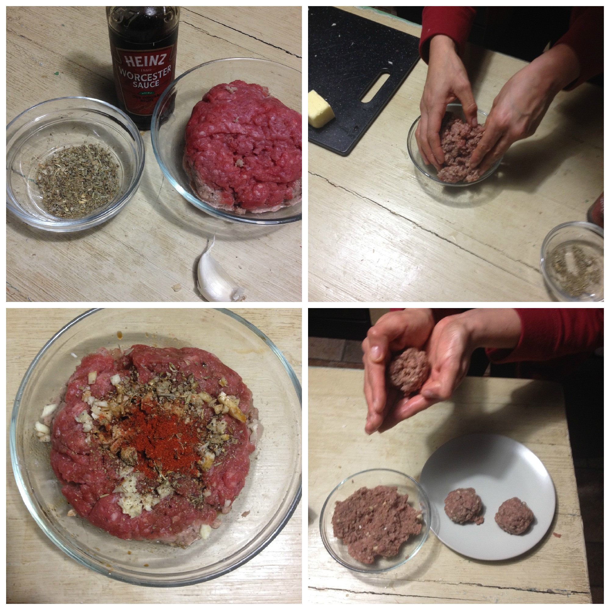

Low carb classic meatballs¶

- Serves: 4
- Type: main
Background¶
This is a classical recipe that can save you if you don’t know what to cook for dinner. If you are not in a low carb diet, to give to these meatballs more consistence you can use 1/4 cup bread crumbs and a egg. Also you can froze them to save you in other occasion.
Ingredients¶
- 500 grams minced meat
- 1 scallions minced
- 2 garlic gloves minced
- 1 teaspoon parsley
- 1 teaspoon paprika
- 1 tablespoon Worcestershire sauce
- Salt and pepper to taste
- 1/2 teaspoon dry thyme
- 1 teaspoon dry rosemary
- 1 teaspoon oregano
- 1/2 teaspoon dry basil
- Oil
Steps¶
Put all the ingredients (NOT the oil) in a bowl, with your clean hands mix all the ingredients
Shape the meatballs with your hands.
Heat a bit of oil in a fry pan and add the meatballs
Make them brown for all sides
Steps
Can be served with¶
- Gravy
- Potato purée
- Salad
- Berries jam
- Cooked baby carrots